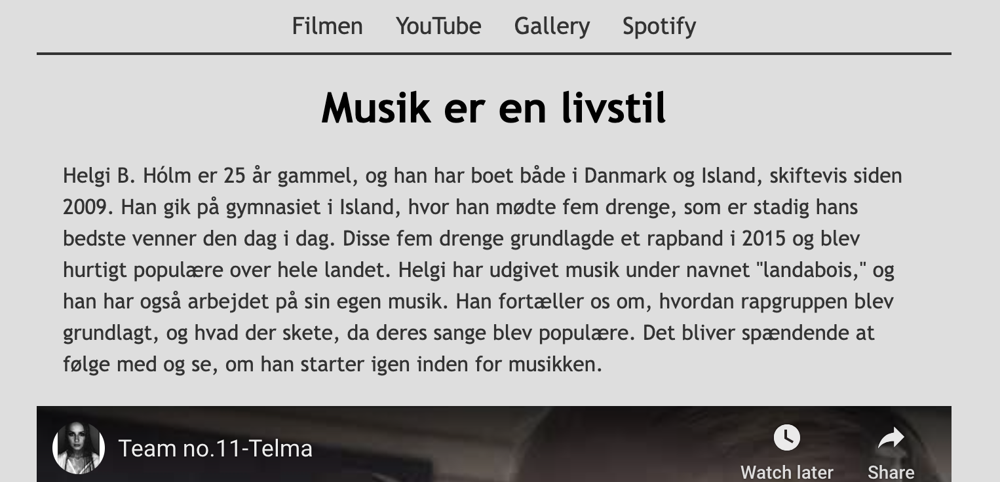
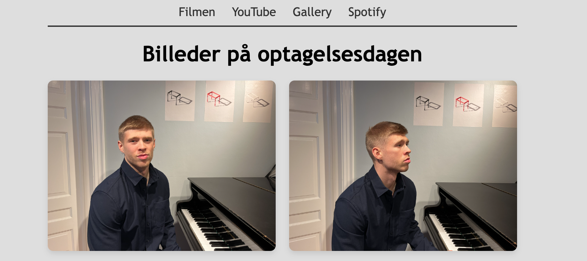
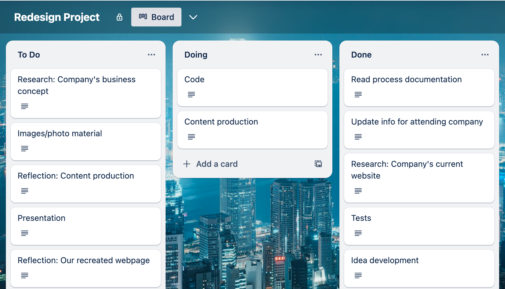
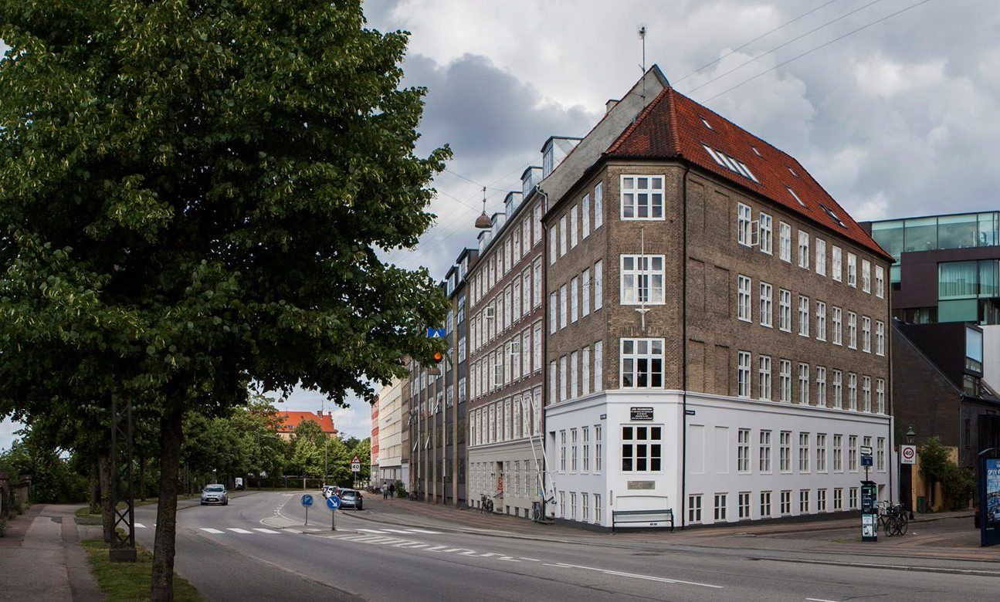

Tema 5 - Grundlæggende indhold
Videosite



I begyndelsen af Tema 5 blev vi introduceret til Premiere Pro. Vi lærte om at filme videoer, hvordan man optager B-rolls, og hvordan man synkroniserer lyde ved hjælp af Premiere Pro. Vi skulle interviewe nogen, vi kender, der har en passion for noget. Vi filmede interviewet og B-rolls for at gøre videoen mere engagerende og holde seeren interesseret. Når vi var færdige med at filme, skulle vi skære videoen ned til 2 minutter, tilføje B-rolls, rette lyden og farvekorrigere. Når det var gjort, oprettede vi en separat videoside og lærte, hvordan man lægger forskellige typer videoer på vores side ved hjælp af iframes til YouTube og MP4.
Link til min videosite
Indholde



Hovedformålet med dette tema var at lære, hvordan man arbejder i grupper, og introducere os til Premiere Pro og andre værktøjer, der ville hjælpe os i fremtiden, når vi arbejder sammen med andre. Det hjalp os også med at oprette videosiden og virksomhedens hjemmeside. Vi lærte om Git, GitHub Pages og GitHub - et program på din computer, der giver dig mulighed for at bruge Git og GitHub. GitHub hjælper dig med at dele kode med andre, og GitHub Pages hjælper dig med at uploade en hel side.
Da vi begyndte at arbejde på vores virksomheds hjemmeside, blev vi introduceret til Scrum. Derefter havde vi et møde hver dag for at se, hvor vi var i vores proces, diskutere næste trin og tackle udfordringer. Vi lærte også at kende Trello. Trello hjalp os med at organisere, hvad vi arbejdede på, og dokumentere, hvad der skulle gøres, og hvad vi allerede havde opnået. Dette var virkelig nyttigt i processen.
Virksomhed og Video


Den sidste opgave i dette tema var at vælge en virksomhed og derefter redesigne dens hjemmeside, lave en video om virksomheden og have en fuldt færdig redesignet hjemmeside for virksomheden. Vi brugte forskellige typer værktøjer, som vi havde lært i løbet af semesteret, såsom moodboards, style tiles, Trello, Scrum og mere. Så arbejdede vi derfra. Ved temaets afslutning lærte vi om brugerdefinerede egenskaber. De gør det meget nemmere at skrive genanvendelig og dynamisk kode. Du skal definere rodomfanget (roden af dokumentet), og du skal kun definere det én gang. De kan bruges til alt, hvad du ønsker; du skal kun ændre værdien ét sted, og så ændres alt, hvor dine variabler er.